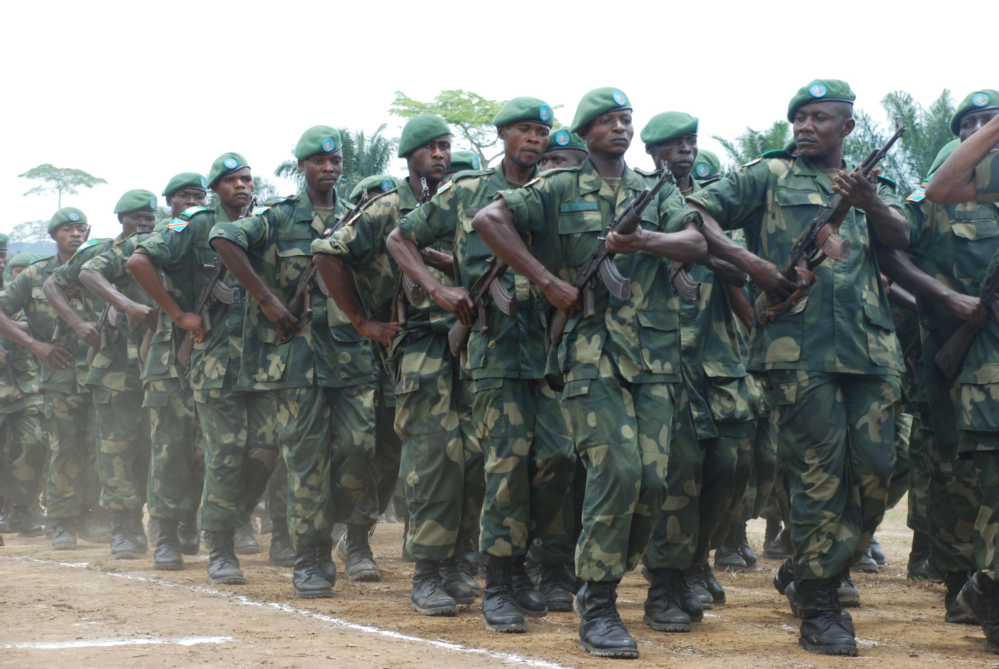
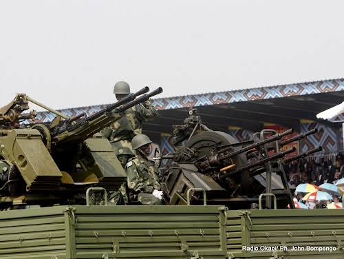

Force de la RDC
Les Forces armées de la république démocratique du Congo (FARDC)
sont les forces armées officielles de la république démocratique du Congo
anciennement appelées Forces armées zaïroises (FAZ).
En 2023 selon une étude du Global fire power index‚ l’armée de la république démocratique du Congo
est classée
8e dans le classement des puissances militaires en Afrique et
72e dans le classement mondial
Lire plus

Missions
Les FARDC assument la responsabilité pleine et exclusive, de la formation de l'Armée Nationale, brassé, intégrée et restructurée, par la Structure Militaire d'Intégration « SMI » en sigle
La constitution de la République Démocratique du Congo définit clairement dans son Art 187 que la mission des FARDC est :
La défense de l'intégrité du territoire national et des frontières ;
La participation au développement économique, social et culturel, en temps de paix ;
La protection des personnes et de leurs biens.
Lire plus

Situations
Les Forces armées de la république démocratique du Congo (FARDC) sont dans un processus de reconstruction après la deuxième guerre du Congo finie en 2003. Le gouvernement à Kinshasa, les Nations unies (avec la Mission de l'Organisation des Nations unies en république démocratique du Congo d'un effectif total de 22 000 personnels fin 2009), l’Union européenne (avec sa mission militaire EUSEC RD Congo et sa mission en 2006 EUFOR RD Congo) et des partenaires bilatéraux comme l’Angola, l’Afrique du Sud et la Belgique essaient de créer une force viable capable de réaliser les missions qui lui sont confiées, la plus importante étant la sécurité et stabilité pour la nation.
Cependant, la réussite de ce processus paraît incertaine, car on assiste à un retour de la corruption et le gouvernement congolais éprouve énormément de difficulté à gérer et contrôler ses forces armées. On note également un manque de coordination entre les donateurs internationaux. Enfin, il est très important de souligner que les FARDC se constituent en partie sur base d'une tentative de regroupement et d'intégration (le « brassage » et le « mixage ») au sein d'une structure de commandement unique des forces militaires tant du gouvernement légal de Kinshasa que des anciens mouvements de rébellion qui ont divisé le pays, en particulier depuis la seconde guerre d'août 2008. Il s'agit en particulier des mouvements Maï-Maï, des troupes du RCD Goma, du MLC de Jean-Pierre Bemba. De vieux antagonismes existent entre ces forces qui sont néanmoins censées opérer en harmonie au sein de l'armée et les tentatives récentes d'intégrer des éléments militaires sous l'obédience du Général Laurent Nkunda au Nord-Kivu ont montré la difficulté et
les limites de cette stratégie. Les conflits internes dans l'armée sont de plus en plus fréquents.
L'on démontre entre autres qu'il semblerait que les problèmes de corruption soit lié au mixage Insurgés - Forces gouvernementales.
Mais le problème le plus important ne se trouve pas là. En dépit de l'aide internationale, la RDC, auparavant le Zaïre
Lire plus